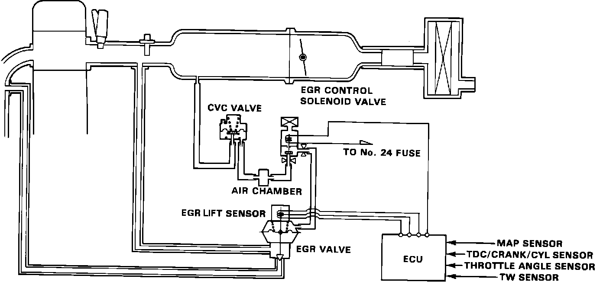

EGR Valve Position Sensor: Description and Operation
EGR System Operation (typical):

PURPOSE
The EGR System is designed to reduce oxides of nitrogen emissions (NOx) by recirculating exhaust gas through the EGR valve and the intake manifold into the combustion chambers.
LOCATION
The computer controlled portion of the EGR system consists of an EGR mounted lift sensor and a vacuum control solenoid in the vacuum box
CONSTRUCTION
The sensor uses a plunger operated potentiometer supplying a signal to the ECU.
OPERATION
The ECU contains memories for optimum EGR lift during various conditions. It reads actual EGR position from the lift sensor.
The sensor uses a plunger operated potentiometer supplying a signal to the ECU. If the EGR actual position differs from it's preferred position, the ECU cuts control solenoid power to reduce vacuum applied to the EGR valve.